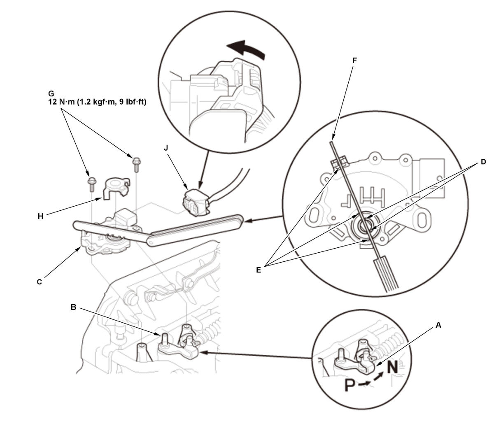

Transmission Range Switch Removal and Installation (L15B7/L15BA/L15BY (CVT)): Installation
- Transmission Range Switch - Install
1. Make sure the control lever (A) is in the N position. If necessary, move the control lever to the N position.
NOTE: Do not use the control shaft (B) to adjust the shift position. If the control shaft tips are squeezed together, it will cause a faulty signal or position due to play between the control shaft and the transmission range switch.
Fig 1: Exploded View Of Transmission Range Switch Components With Torque Specifications (L15B7/L15BA/L15BY - CVT)
Courtesy of HONDA, U.S.A., INC.2. Set the transmission range switch (C) to the N position. Align the cutouts (D) on the rotary-frame with the N positioning cutouts (E) on the transmission range switch, then put a 2.0 mm (0.079 in) feeler gauge blade (F) in the cutouts to hold the transmission range switch in the N position.
NOTE: Be sure to use a 2.0 mm (0.079 in) feeler gauge blade or equivalent to hold the transmission range switch in the N position.
3. Loosely install the transmission range switch gently on the control shaft while holding it in the N position with the 2.0 mm (0.079 in) feeler gauge blade.
4. Tighten the bolts (G) on the transmission range switch while you continue holding the N position.
NOTE: Do not move the transmission range switch when tightening the bolts.
5. Remove the feeler gauge.
6. Install the control shaft cover (H).
7. Connect the connector (J), and make sure it is fully seated.
NOTE: Check the connector for corrosion, dirt, or oil, and clean or repair if necessary.
- TCM Harness - Install
- Intake Air Duct E - Install
- Air Cleaner - Install
- Transmission Range Switch - After Install Check
1. Turn the vehicle to the ON mode. 2. Move the shift lever through all positions/modes, and check that the shift position indicator follows the shift lever operation.
3. Start the engine.
NOTE: Check that the engine starts in P or N position/mode, and does not start in any other positions/modes.
4. Check that the back-up lights come on when the transmission is in R position/mode.